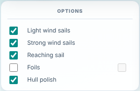
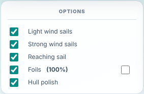
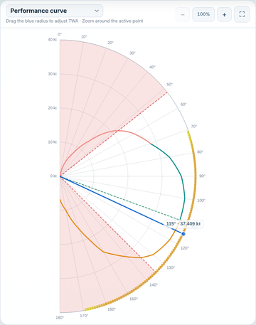
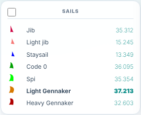
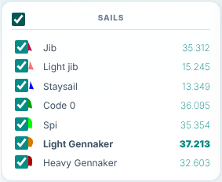
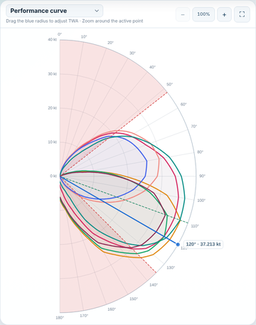

Polars Chart
Left Hand Side Panels
Layout
The column at the left of the chart holds the boat setup: the Options subscribed for the race, the Sails and, below them, the Partners links.
The race information (race name, route, boat, countdown and version) and the Reset Application button are in the Races Drawer.
Options

This panel reflects the boat setup with the options subscribed before the beginning of the race.
Each checkbox and its label can be clicked to activate the corresponding option.
The boat options are stored independently for each race. That way, you can have different boats setups for different races, and the UI will reload them properly when switching race.
The Sails options enable the related sails, which become active on the Sails panel.

When the Foils option is enabled, a rate appears in bold beside it.
It shows how much of the Foils boost is used at the current attitude: 0% means no boost, 100% means the maximum boost of the boat.
The Foils never "brake" the boat, so the lowest speed factor we can get is x1.
The best Foils factor we can get however depends on several criterias:
- The boat
Each boat may have different Foils setups.
In general, the max factor is x1.04, but that may vary with future boat setups. - The Attitude
The Foils setup operates best in a given range of TWA and TWS, and operates with decreasing performance outside those two ranges.
To help visualize the Foils performance range, the checkbox at the right of the Foils line activates a layer on the Chart, which draws a thick colored line between the larger circle and the angles graduations.
Yellow indicates a factor of x1, while a dark orange is where the foils factor is at its maximum.
In between, a gradient indicates that the factor is not optimum.

The example beside illustrates the Foils performance range option enabled, with a TWA of 115° inside the Foils range.
Sails

This panel presents the sails subscribed for this race amongst all available sails.
Jib and Spi are always available, as they are part of the starter pack.
Light Jib and Light Gennaker come with the Light wind sails pack.
Staysail and Heavy Gennaker come with the Strong wind sails pack.
Code 0 come with the Reaching sail pack.
All sails speeds are displayed on the right column of the panel. Only the fastest active sail is shown in bold, the other speeds are shown in a light font. The speeds use the number of decimals set with the nbdigits URL parameter (2 by default), like the chart labels and tooltips.
The color of the sail icon on the left of the panel represents the color used on the chart to plot data for this sail.

The checkbox at the top left of the panel is the Plot Full Sails Curves option. When it is enabled, the chart is displaying a full curve for each sail checked to be displayed.
All sails can be checked or unchecked, regardless you bought the related option packs.
The bold curve is always the best sail for the current TWA amongst the sails registered.
That means that if you uncheck the currently best sail, you will not see any bold curve on the chart.

In the example beside, all the sails are displayed as complete curves.
The speed displayed beside the TWA radius remains the best available sail speed.
The colors used are the same than the sail icons on the Sails side panel.